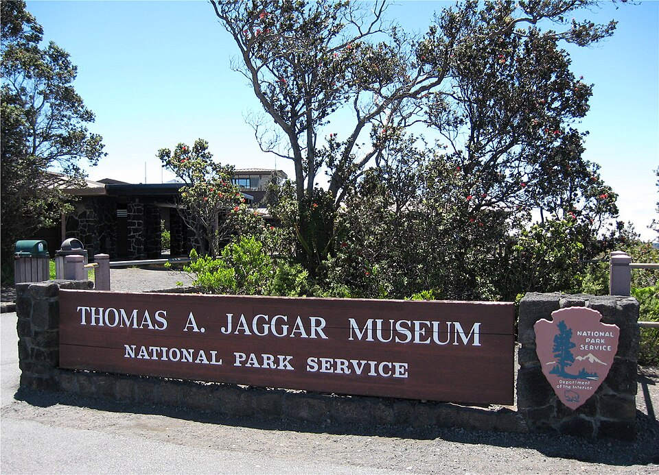

Jaggar Museum
Place: Jaggar Museum, Kīlauea, Hawaiʻi Island
Type: Museum / scientific site / former volcano observatory visitor center
Story it tells: A museum named for volcanologist Thomas A. Jaggar, whose vision of continuous volcanic monitoring helped establish the Hawaiian Volcano Observatory and shaped modern volcanology.

For decades, Jaggar Museum served as one of the most popular viewpoints in Hawaiʻi Volcanoes National Park. Perched on the rim of Kīlauea Caldera near Halemaʻumaʻu, the museum introduced visitors to the science of volcanoes while providing sweeping views of one of the world's most active volcanic landscapes. The museum was named for Thomas Augustus Jaggar Jr., the geologist whose efforts helped transform volcanology from a largely observational science into a discipline focused on continuous monitoring and public safety.
Jaggar first visited Hawaiʻi in 1909 while exploring locations for a permanent volcanic observatory. Inspired by the devastating 1902 eruption of Mount Pelée in Martinique, which killed nearly 30,000 people, he became convinced that scientists needed to study volcanoes continuously rather than only after disasters occurred. Kīlauea offered an ideal laboratory: it was persistently active, relatively accessible, and safe enough for long-term scientific observation.
With support from Honolulu businessman Lorrin Thurston, Volcano House owner George Lycurgus, the Carnegie Institution, and the Massachusetts Institute of Technology, Jaggar established the Hawaiian Volcano Observatory in 1912. Early instruments were housed in a reinforced vault near Volcano House, where Jaggar and his small staff recorded earthquakes, ground deformation, gas emissions, and volcanic activity. The observatory became one of the first institutions in the world dedicated to continuous volcano monitoring.
Jaggar directed the Hawaiian Volcano Observatory from 1912 until 1940. During those years he helped pioneer methods that remain central to volcanology today. He believed scientific monitoring should serve the public and regularly shared information through lectures, newspaper articles, and community outreach. Modern Hawaiian Volcano Observatory scientists continue to follow this model through hazard updates, public education programs, and real-time monitoring of volcanic activity (today using livestreams).
The building that eventually became Jaggar Museum opened in 1927 as the Uwekahuna Museum, named after the nearby bluff overlooking Kīlauea Caldera. After renovations and expansion, the facility reopened in 1987 as the Thomas A. Jaggar Museum. Visitors explored exhibits on volcanic processes, earthquake monitoring, lava flows, and the history of the Hawaiian Volcano Observatory while enjoying some of the best views in the national park.
The museum's story came full circle during the 2018 eruption of Kīlauea. Earthquakes, explosions, ground collapse, and summit subsidence caused extensive structural damage throughout the summit area. Jaggar Museum and nearby observatory facilities were permanently closed after suffering significant damage. The museum never re-opened. In 2024, both the museum and the adjacent historic observatory structures were removed as part of the park's recovery efforts.
Today, the museum itself is gone, but its namesake remains one of the most influential figures in the history of Hawaiian science. Thomas Jaggar's belief that volcanoes should be monitored continuously to protect communities helped establish practices now used around the world. The museum that bore his name introduced generations of visitors to volcanology and better understanding the forces that created the islands.